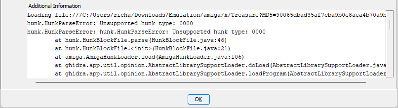

Hunk overlay and analysis improvements
A release focused on making real Amiga executables import more faithfully and become useful reverse-engineering targets sooner.
Amiga executables often carry more structure than a simple sequence of resident code segments. This release improves how the extension represents that structure, then uses it to make Ghidra’s analysis more accurate and more legible. The work is generic: it is based on Hunk, AmigaOS and compiler conventions rather than a particular game or executable.
Overlay executables are first-class imports
The loader now understands Hunk overlay files as a root node plus separately addressable overlay nodes. It creates Ghidra overlay address spaces for those nodes, retains the overlay-manager payload as read-only metadata, and keeps normal relocations attached to the correct space.
- Hierarchical
HUNK_OVERLAYtables used by ALink, BLink and SLink are decoded when their documented layout validates. - MANX/Aztec C flat overlay tables, including linker trampolines and legacy node numbering, are recognised conservatively.
- Malformed or unknown overlay metadata no longer turns a usable import into an opaque failure. The import records a persistent warning instead of inventing targets.

Unsupported hunk type: 0000 instead of interpreting the overlay structure.Relocations retain their meaning
Hunk relocations are now represented with their signed addends intact. In particular, a relocation referring just before a segment no longer has to be flattened into an unrelated synthetic address. Ghidra can render it in terms of the real Hunk base and addend, while the loader retains the physical metadata needed to explain the reference.
The implementation covers the documented LoadSeg relocation forms, including relative 32-, 16- and 8-bit relocations. Register-base relocations remain intentionally unresolved because an executable does not contain the linker-selected runtime base required to resolve them honestly.
Better code discovery without game-specific guesses
68000 programs frequently store routine addresses in tables and pass them indirectly. Standard analysis does not always promote such targets into functions. The new address-taken-code analysis looks only at executable stored-address targets whose disassembled control flow reaches a 68000 return instruction.
That gives a useful middle ground: proven targets become functions with provenance comments, uncertain targets remain data and can be reviewed through a modeless candidate list. The analyser is enabled for Hunk imports and remains opt-in for other 68000 programs.
Amiga library and device calls become typed calls
The extension now discovers libraries, devices and resources referenced by executable code, materialises only the relevant FD/SFD signature tables, and follows their vector calls. It recovers call provenance and applies parsed API parameter and return types where the published definitions provide them.
- Ordinary library openings and compiler-generated wrappers are handled without creating tables for arbitrary filename-like strings.
- Device ABI dispatch is recognised, including
BeginIO-style calls and their request structures where the type information supports it. - The bundled NDK type archive is regenerated reproducibly from the checked-in NDK 3.9 header manifest.
MANX and SAS/C context recovery
MANX/Aztec C overlay executables select a MANX calling convention that models two-byte stack slots while retaining the normal 68000 instruction model. The loader recognises validated startup A4 seeding and compiler forwarding stubs, allowing root and overlay code to share the recovered global context.
A conservative MANX runtime analyser identifies common arithmetic and string helpers by instruction and control-flow shape. It names matching compiler stubs without depending on application addresses or replacing meaningful analyst names. The accompanying compiler-runtime and overlay fixtures keep that behaviour testable, including SAS/C-oriented context cases.
Cleaner delivery
The extension now has a stable identity: ghidra-amiga. Its archive no longer takes a name from the directory where the repository happens to be cloned. The build package is deliberately runtime-only: it includes the extension JAR, required dependency, API data, language definitions and shipped scripts, while excluding source, tests, reverse-engineering notes, build products and local workspaces.